Stefan Sendyk
ABOUT ME
Film · Music · Editing
The media's the most powerful entity on earth.— Malcolm X
Film · Music · Editing
My name is Stefan Sendyk.
I'm studying A Levels at Aloha College. Although my other subjects are largely analytical and academically focused, I chose Media Studies because I wanted to develop a different side of my abilities. I see it as an opportunity to combine creativity with analytical thinking — something I didn't get the chance to develop during my IGCSEs — and to gain knowledge and practical experience that I hope will be valuable for my future career.


My interest in film and cinematography has been present from a young age, as it has been an important part of my family background. Being exposed to the industry through my family has given me an appreciation for the creativity, planning and collaboration that go into producing content, and has encouraged me to explore filmmaking myself.
Some of my favorite movies:

Two hitmen, a boxer, a gangster's wife and a pair of diner robbers cross paths in Los Angeles, in interlocking crime stories told out of order.
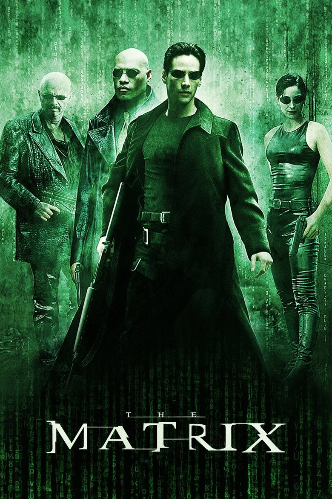
Hacker Neo discovers the world is a simulation built by machines to enslave humanity, and joins Morpheus's rebellion to fight back.
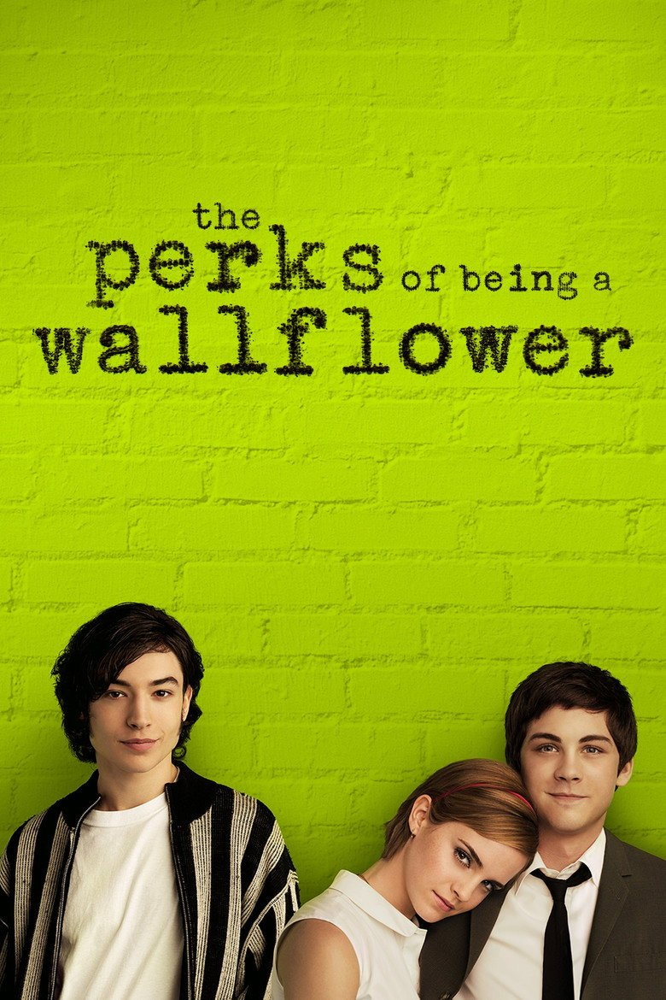
Shy, troubled freshman Charlie is taken in by two free-spirited seniors, who show him friendship, first love and great music, while he faces a trauma he has buried.

In a future where robots have replaced human boxers, a washed-up fighter and his estranged son turn an old scrapyard robot into an unlikely champion contender.

The true story of Christopher McCandless, who gives away his savings after graduating and hitchhikes across America to live alone in the Alaskan wilderness.
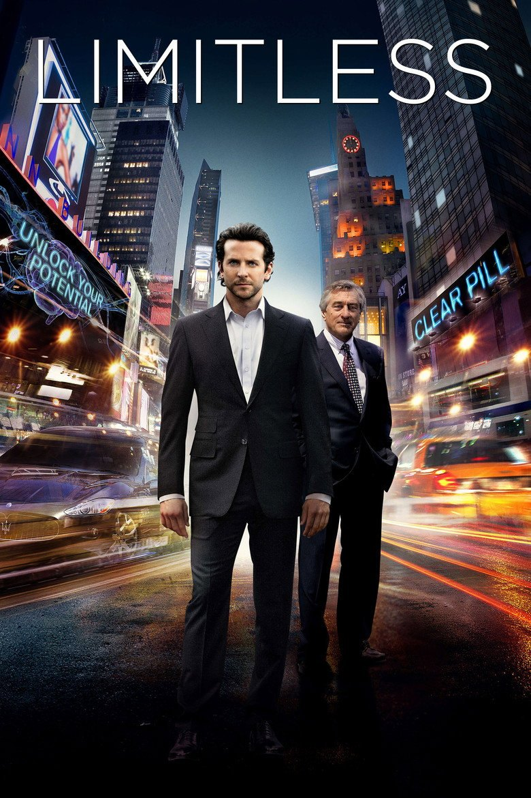
A struggling writer takes a mysterious pill that unlocks his brain's full potential, turning him into a genius overnight — until the side effects and dangerous people catch up with him.
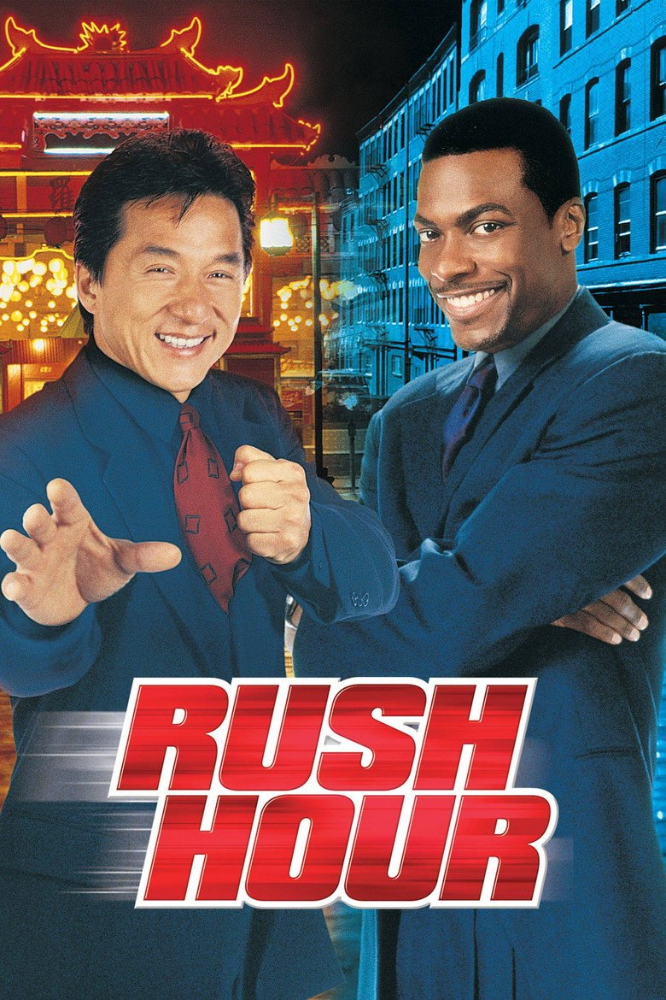
A by-the-book Hong Kong detective and a loudmouthed LAPD cop are forced to team up to rescue a Chinese diplomat's kidnapped daughter in Los Angeles.

A science teacher wakes up alone on a spaceship light-years from Earth with no memory, and must stop a microbe that is dimming the Sun — helped by an unlikely alien friend.
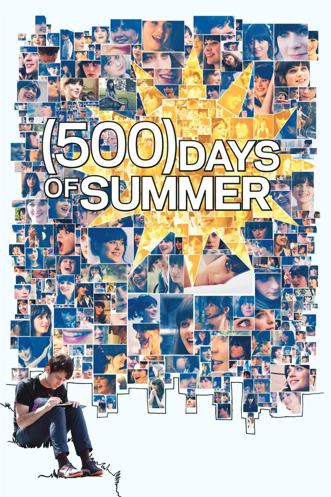
Greeting-card writer Tom falls for his coworker Summer, who doesn't believe in love. Jumping back and forth through their 500 days, the film shows how it all fell apart.

An insomniac office worker meets reckless soap salesman Tyler Durden, and together they start an underground fight club that spirals into something far more dangerous.
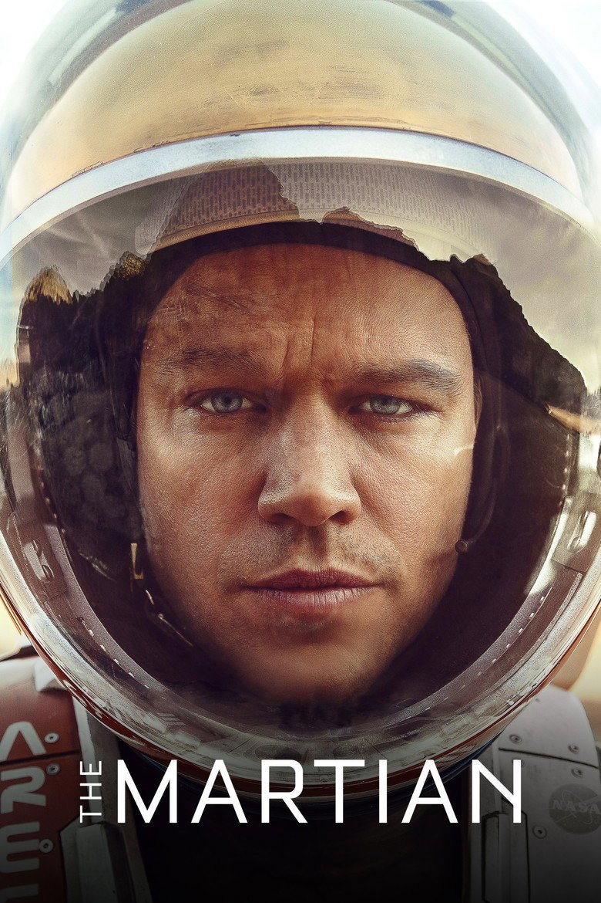
Left behind on Mars after his crew presumes him dead, astronaut Mark Watney uses science and humour to survive alone while NASA races to bring him home.
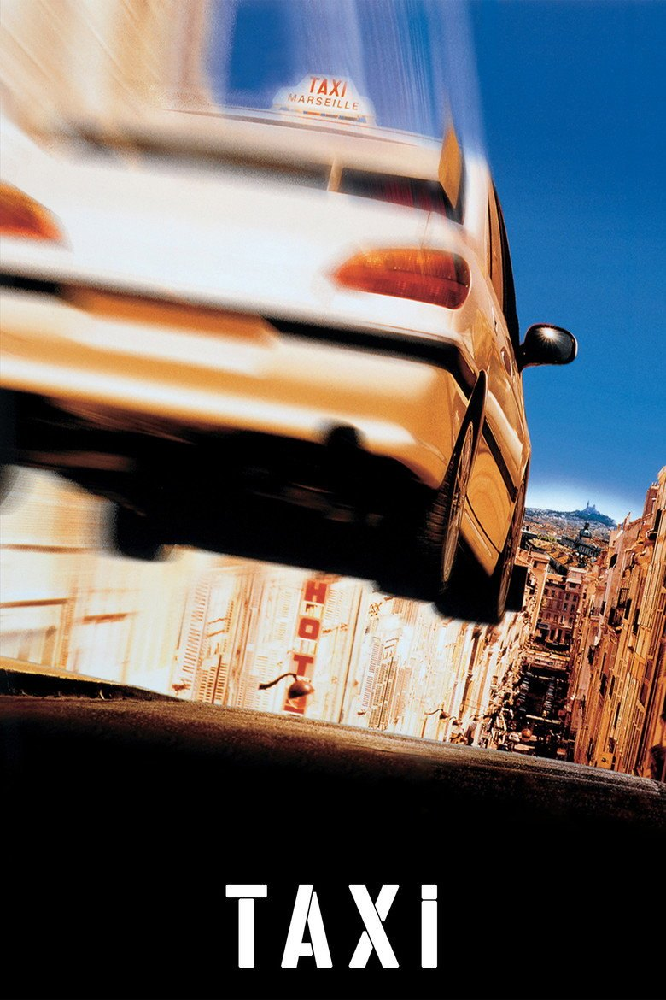
Daniel, a speed-obsessed Marseille taxi driver, gets caught by a hopeless detective who can't drive — so the two team up to chase down a gang of German bank robbers.

When giant monsters called Kaiju rise from a rift in the Pacific Ocean, humanity fights back with giant robots called Jaegers, each steered by two mind-linked pilots.
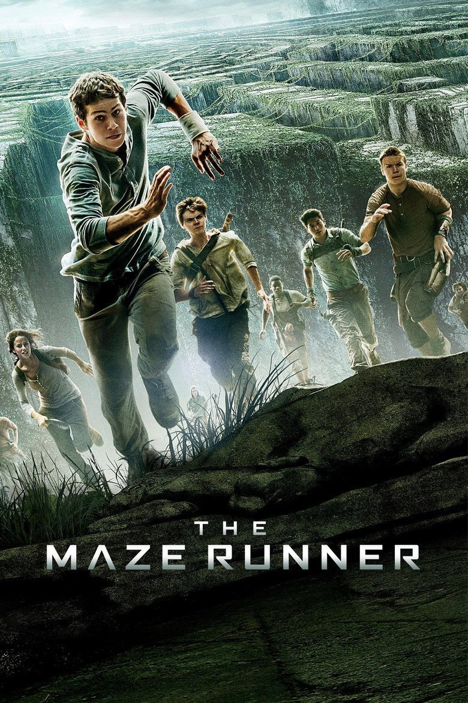
Thomas wakes up with no memory in a glade surrounded by an enormous, ever-shifting maze, and must work with the other trapped teenagers to find a way out.
Music is another major influence on me. I completed music school back in 2023 and continue to listen to a wide range of music in my free time. This has made me particularly interested in the relationship between sound and visual media.
Some of my favorite albums:

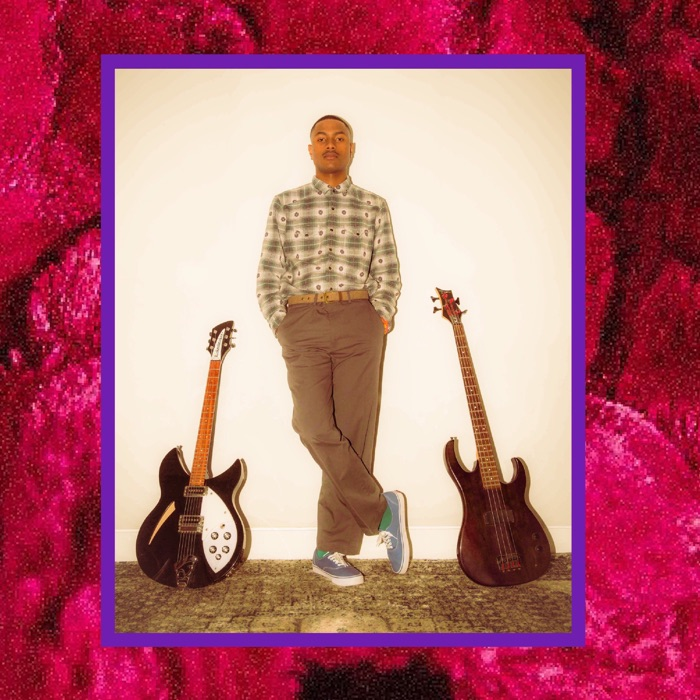
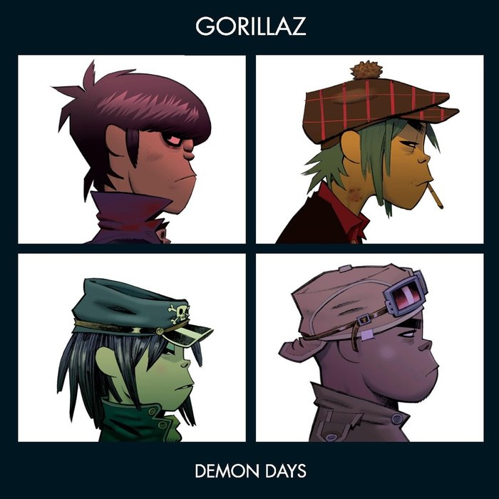

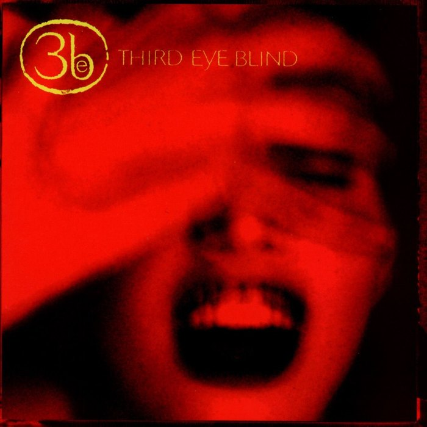
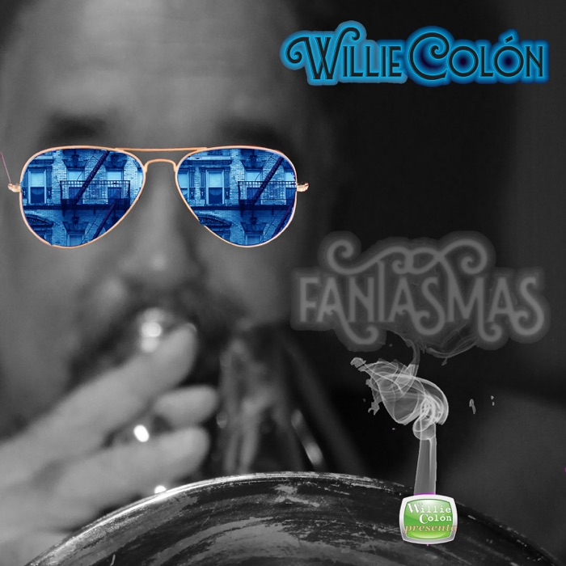
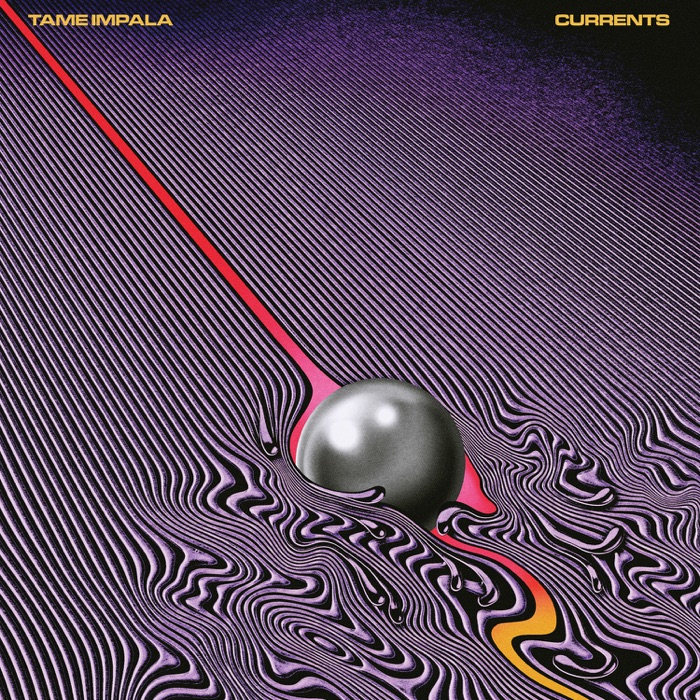
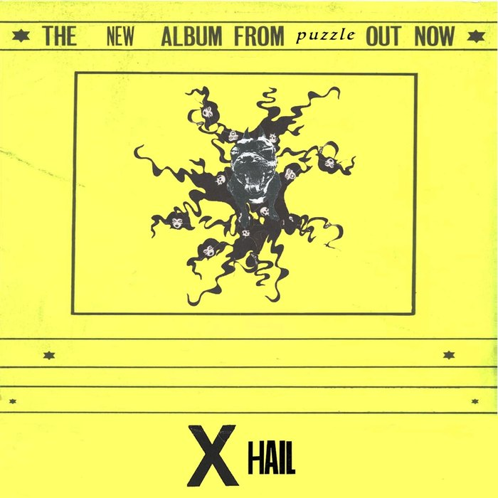
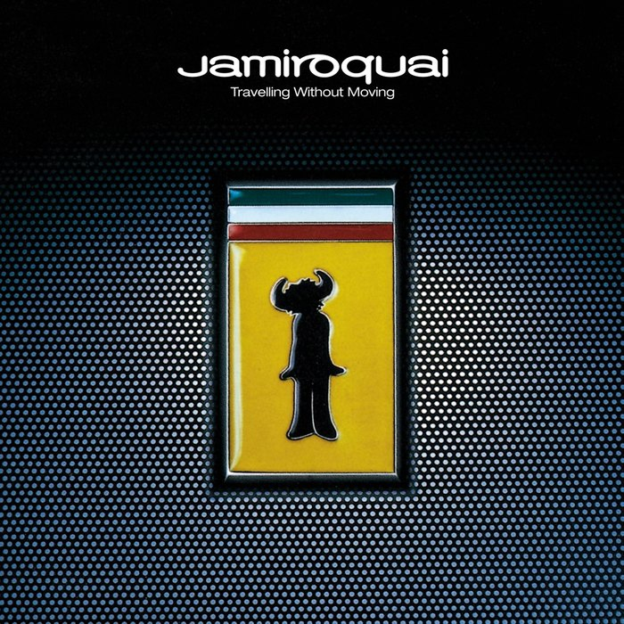

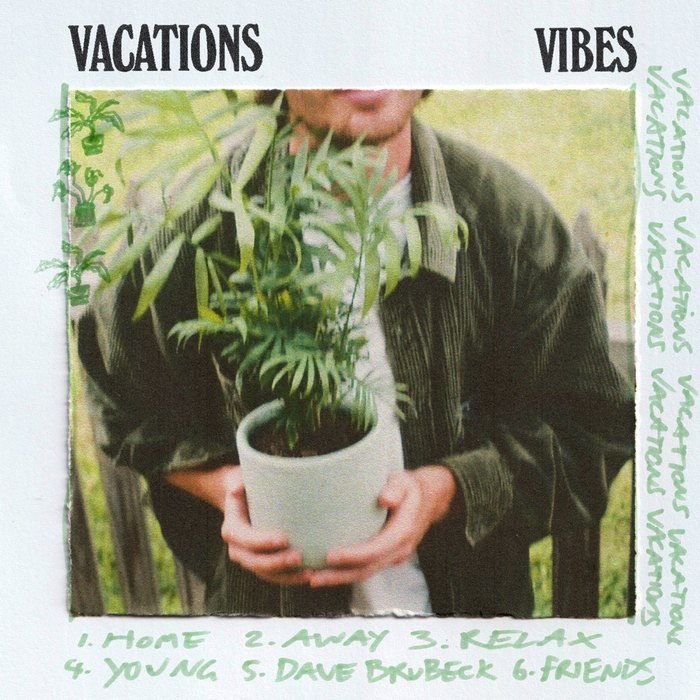
Over the past two years I have developed a strong interest in video editing. I began editing clips and scenes from different television shows and films, gradually developing my understanding of pacing, transitions, sound and visual storytelling. This hobby eventually led me to build an audience of 5,500 subscribers on TikTok.
Although I initially started editing simply because I enjoyed it, the experience taught me how creative decisions can influence an audience and how important it is to understand what makes content engaging.
I believe that my combination of analytical thinking, musical experience, interest in cinematography and practical editing experience gives me a strong foundation for Media Studies. Through this course, I hope to develop these skills further, experiment with different forms of media production and, most importantly, develop my own creative style and understanding of how media can communicate ideas to an audience.
A project featuring a first day at school. Here we discovered basic filmmaking, with no real objectives.
Focused on different camera shots. We were given different objectives and fulfilled them.
Focused on sound recreation. We were given a 1.5-minute video without sound and were told to recreate its sound so that it sounded realistic.